マシンマップの操作と確認
①の「マシンマネジメント」をクリックすると画像A「マシンマップ」「マシンセッティング」「ゲームプレイタイプ」が出現しますが、現時点で触れるのは「マシンマップ」と「マシンセッティング」のみです。
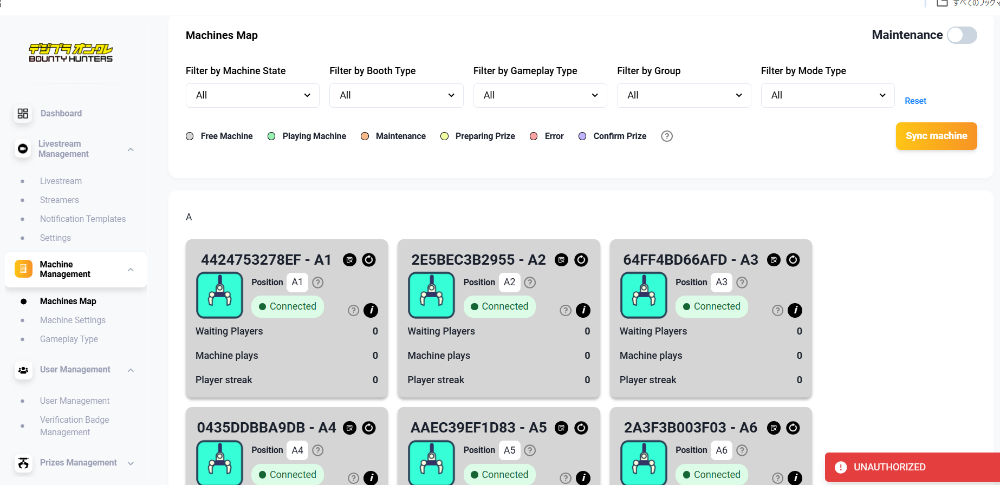
【画像A】ブース詳細の確認手順
「マシンマップ」を開くと各ブース情報が表示されます。さらにブースごとの詳細を見るには、何も文字等がない部分をクリックしてください。
※クリックしてはいけない場所があるので注意してください。
クリックすると画像Cが表示されます。
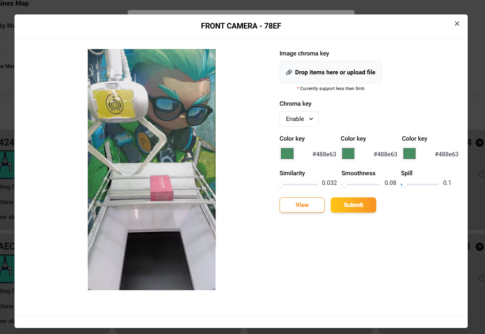
【画像B】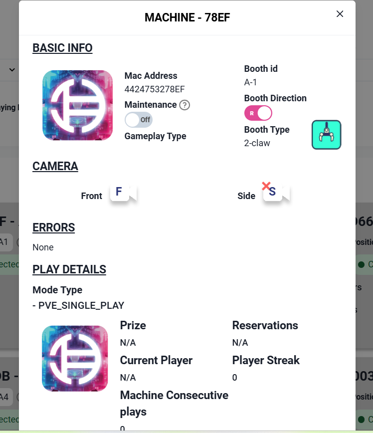
【画像C】詳細画面の項目説明
- ①ブースアドレス（ID）: アンドロイドボードを交換した時や、LANコンフィグ変更の際に必要になります。
- ②メンテナンススイッチ: クリックでメンテナンス状態に入り、再度クリックで解除されます。
- ③ブースダイレクション: 右開きか左開きかの変更が出来ますが、基本触りません。
- ④フロント、サイドカメラ: 画像Bのカメラ映像が見れます（UIと表示範囲が違うので注意）。ここでクロマキー等も可能ですが、クロマキーアプリが別であるので基本使いません。
エラーログと注意事項
画像Dの赤丸をクリックすると画像Eのエラーログ確認画面が見れます。
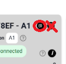
【画像D】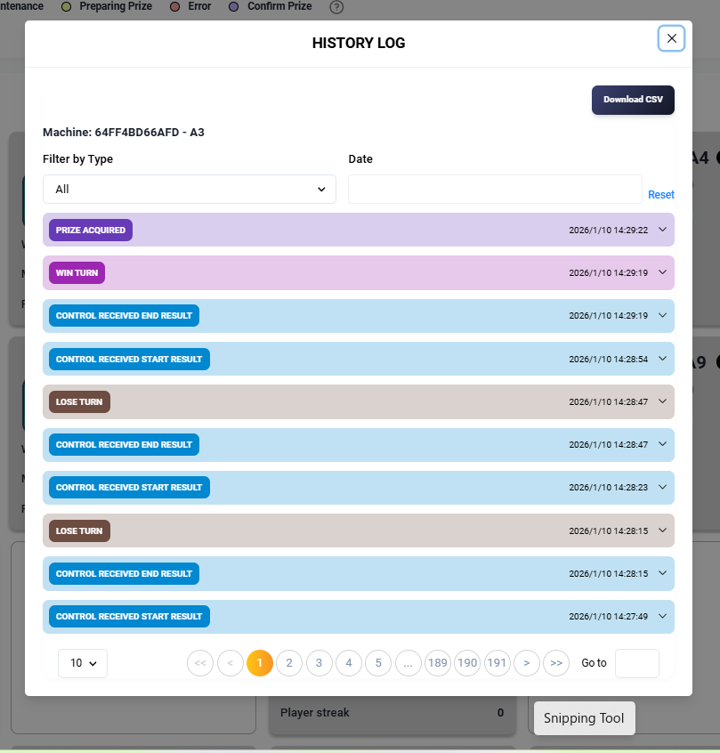
【画像E】※画像Dの✖印をクリックしてしまうと、ブースが強制再起動してしまうので基本絶対押さないでください。
ソート機能とエラー詳細
画像Fの赤線部分をクリックすることでソートが可能です。また、赤丸をクリックするとエラーの詳細を確認できます。
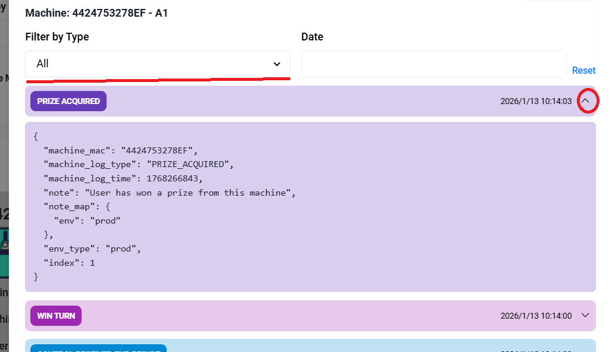
【画像F】ブース状態の判別（色別）
画像Gでは、ブースの状態が色分けされて表示されます。
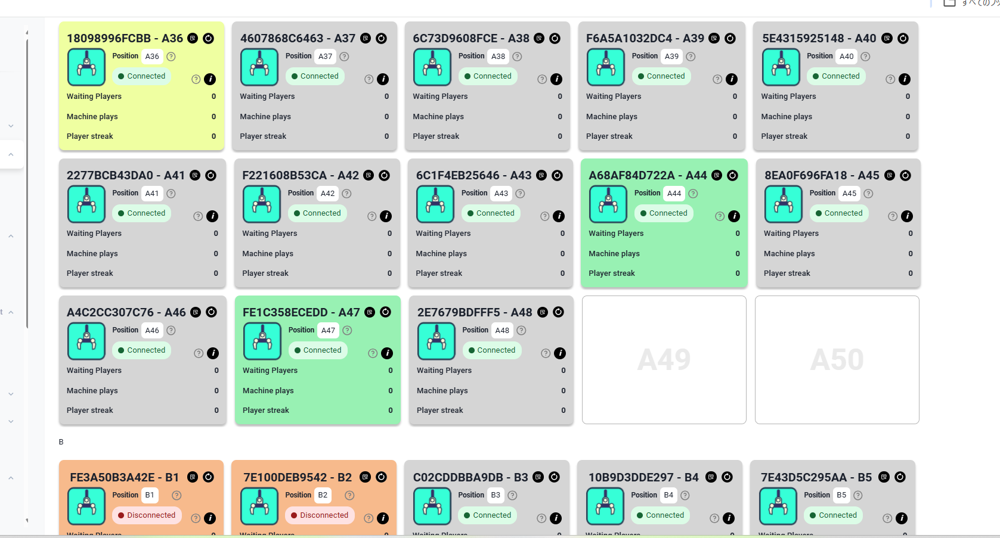
【画像G】マシンセッティング
「マシンセッティング」をクリックすると画像Aが表示されます。この画面で各ブースの状況を一覧・設定できます。
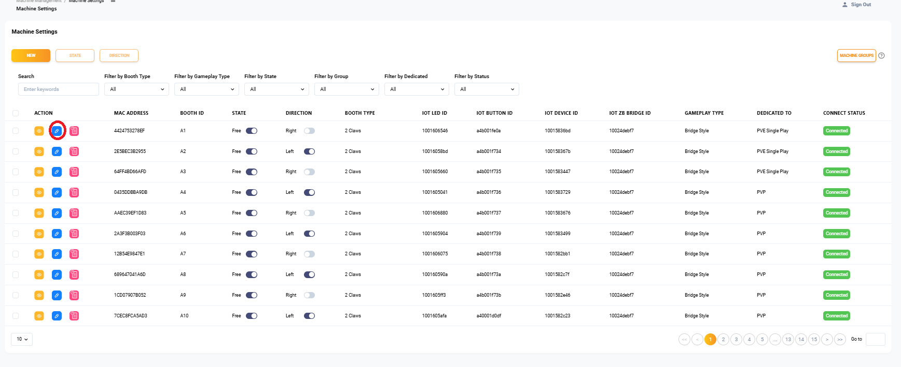
【画像A】確認できるステータス
この画面では各ブースの以下の情報が分かります。
- ID
- ゲームプレイタイプ（Bridge Style、Ring Catcher 等）
- ゲームモード（PVE、PVESingle Play 等）
- 接続状態（Connected、Disconnected 等）
※注意: 赤丸①をここで変更すると、実際のブースステータスも変わるので気をつけてください。
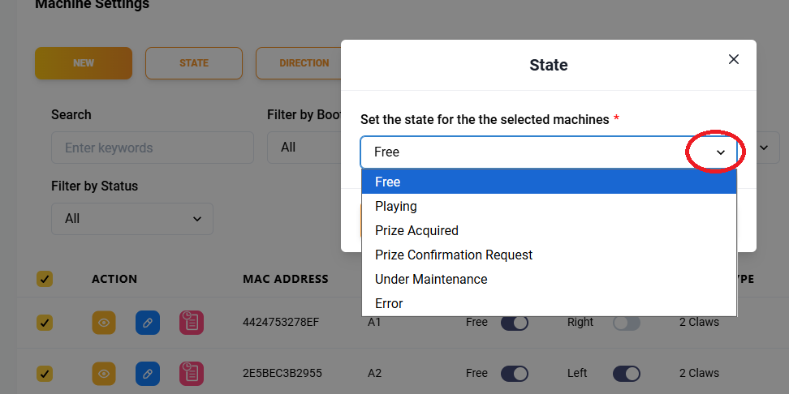
【画像B】プレイ設定の手順
- 画像Aの赤丸を押すと画像Cが出てきます。
- 画像Cの赤丸②部分を、画像D（別紙参照）の赤丸と同じ設定にします。
- 画像E（別紙参照）のようなプライズを選んだ時に、そのブースをプレイ出来るようになります。
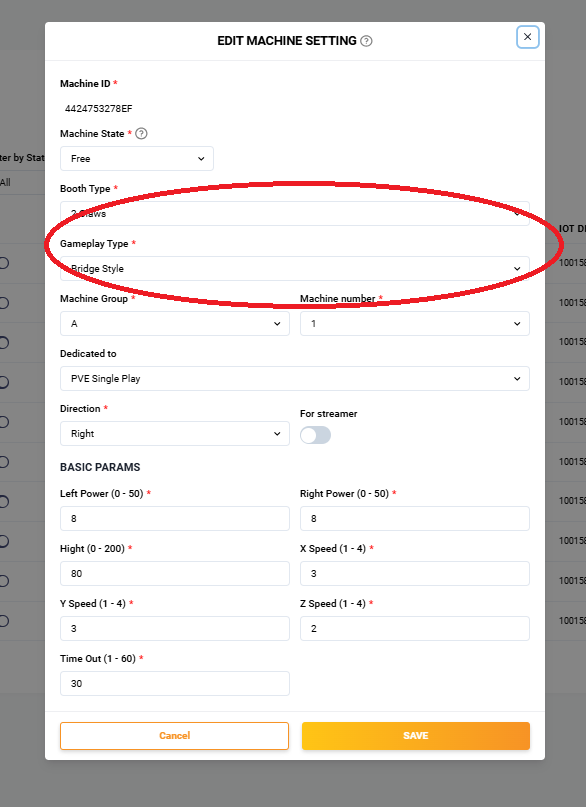
【画像C】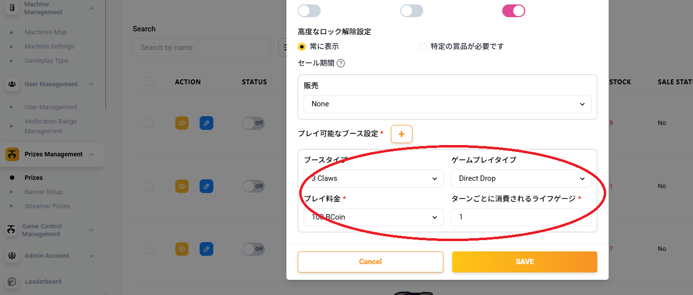
【画像D】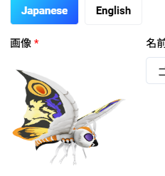
【画像E】一括変更と注意事項
- チェックボックスにチェックを入れると、まとめてステータスを変更できます。
- パワーやスピード等は基本変えません。
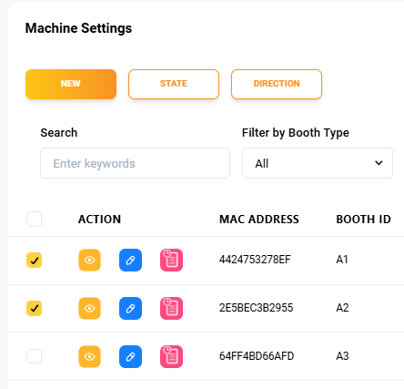
【画像F】ライブ配信セッティング
① Booth Type 等の確認・変更
Machine Settingsから対象台の編集ページを開き、「Booth Type」「Gameplay Type」「Dedicated to」を確認・変更します。
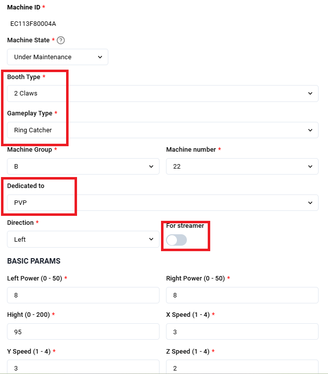
【画像1】Booth Typeの対応表
- じかおき: 3claws + Direct Drop
- 橋渡し: 2claws + Bridge Style
- ペラ輪: 2claws + Ring Catcher
- たこやき: 3claws + Takoyaki Drop
② Dedicated to (PVE / PVPの選択)
ストリーマー向け（かま子さんのシングルプレイ配信時等）
- 配信時: 「PVE」に設定し、「For streamer」をON（ピンク色）にする。
- PVPの時: OFFにする。
- 設定後、忘れずにSAVEを押す。
※配信時は、お客さんが分かるようにアリーナ名を変更します。
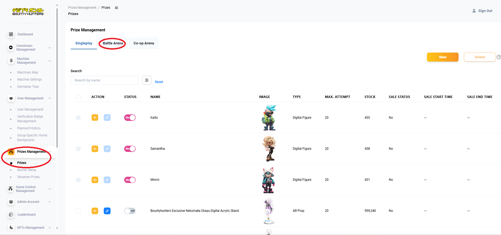
【画像2】③ プライズ・バトルアリーナの設定
Prize ＞ Battle Arenaを開く。- 使用するプライズの編集ボタンを押す。
・OFF時のみ編集可能です。
・誰かがプレイ中の場合はON→OFFにできません。
・現状、配信用は「Treasure Box Lv.0」を使用します。
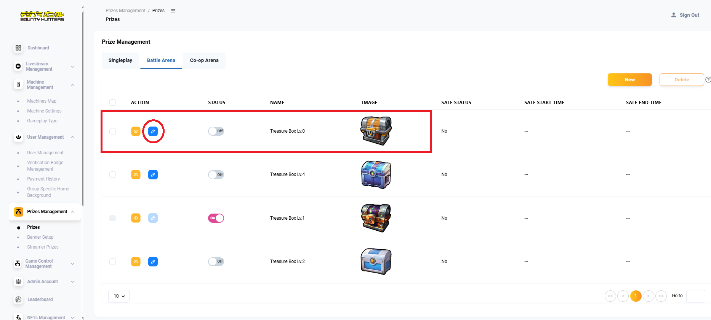
【画像3】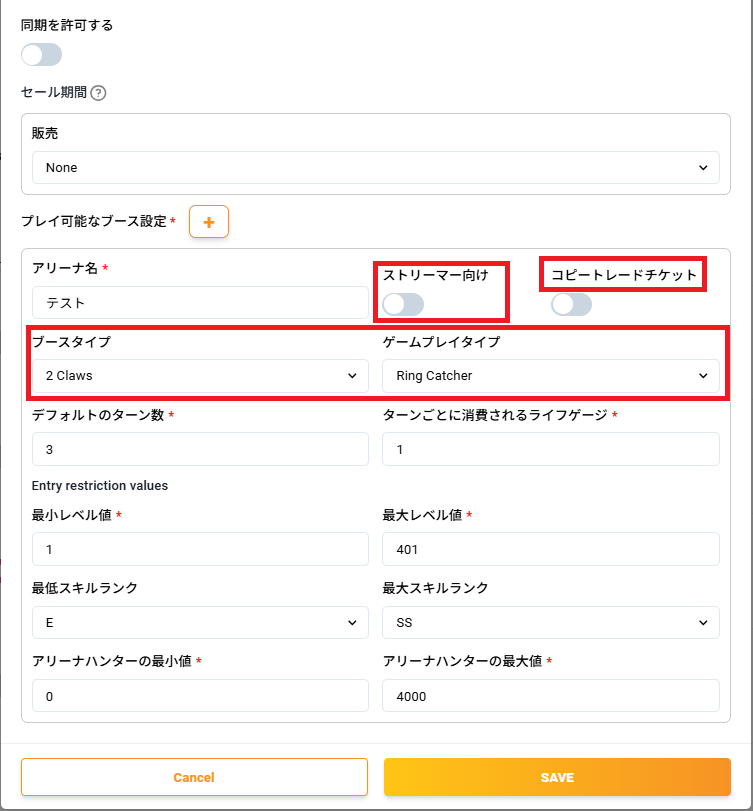
【画像4_1】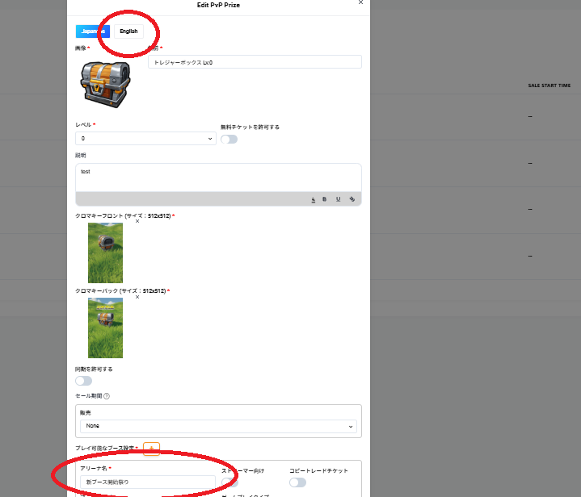
【画像4_2】④ ストリーマー向け詳細設定
- シングルプレイ配信（かま子さん等）: 「PVE」に設定し、For streamerをON（ピンク色）にします。
- PVP（対戦）の時: OFFにします。
- アリーナ名の変更: 配信時はお客さんが分かる名前に変更します（名称はその都度かま子さんと相談）。
- 重要: English側のアリーナ名にも適当な英語（
abc等でOK）を入れないと保存されません。
- 重要: English側のアリーナ名にも適当な英語（
- コピートレードチケット: シンクロありの場合はONにします。
- 整合性: ブースタイプ、ゲームプレイタイプを①で設定した状態と同じにします。
- 設定が終わったら必ず SAVE を押してください。
⑤ ⑥ アプリ表示（Status）の切り替え
- 表示する: StatusをONにするとアプリ上に表示されます。
- 非表示にする: StatusをOFFにするとアプリ上から消えます。
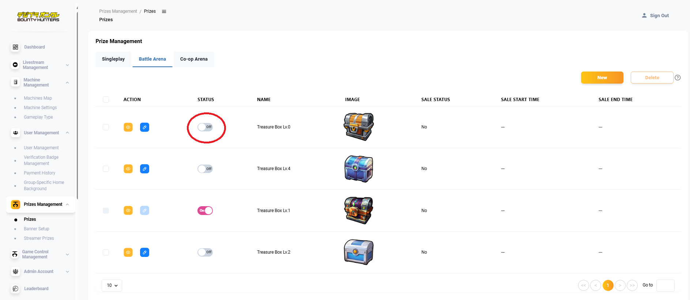
【画像5】LANコンフィグ関係（ボード入れ替え時）
元々ついていたアンドロイドボードの管理パネル表示を消さないと、付け替えた後管理パネルに元のIDが残ってしまい、そこに新しいIDを入れられなくなります。付け替え前（もしくは付け替えて完全に入れ替えが確定した際）に、元のIDが入ってる場所を空けておく必要があります。
アンドロイドボード入れ替え手順
- マシンセッティングで適当に筐体を選んでマシングループ（該当の筐体が空いてるか）をチェック。空いてなければ「Eグループ」に逃がす。→ここで確実に逃がせたか確認！
- 元のアンドロイドボードを繋げて、一旦管理パネルに反映させる（※現時点で管理パネルのIDが付け替え前のIDのままであれば繋がなくてOK）。
- 入れ替えた新しいボードのIDに変えて割り当て直す。→ここでブース（ID）を変えてもらわないと割り当てられないので注意。（初めて割り当てる場合はマシンセッティングから「new」で作る）
☆ アンドロイドボード諸々出来たら… 忘れずに Any Desk を入れる。
☆ 環境割り当て時、起こりうる事と対処法
クロマキー用アプリに表示されていない（ブラックになってるのではなく全くない）場合、まずはその筐体の電源が入っているか確認してください。
- ランコンフィグを確認してアドレス、IP等が合っているか確認する。
- 管理画面でその筐体を「NEW」で登録する。
- 【注意】その時、A1、C2等の番号も確認して登録しないと変な所に入ってしまうので注意。
※筐体番号は、管理画面にある筐体の「ポジション」の隣の番号をクリックすると変更可能です！
ユーザーマネジメント
※主にユーザーへのポイント付与で使用します。
ポイント付与手順
- 検索窓（①）にユーザーアカウントを入力して「search」を押す。
- 対象アカウントの左側チェックボックスにチェックを入れる。
- 上部の「Transfer(黒いボタン)」を押して、
pointかticketを選択する。 - （ポイント付与のやり方）「Transfer(黒いボタン)」を押し、Transfer point in game を選択する。
- 付与する項目に数値を入力する（他は0にする）。
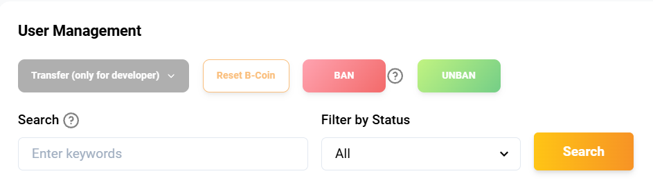
【画像1】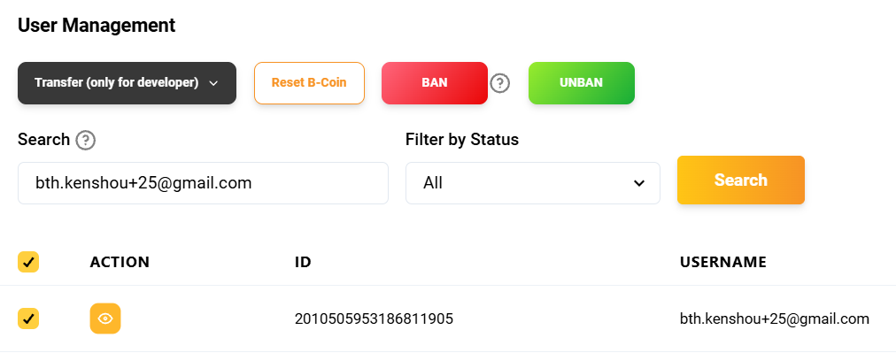
【画像2】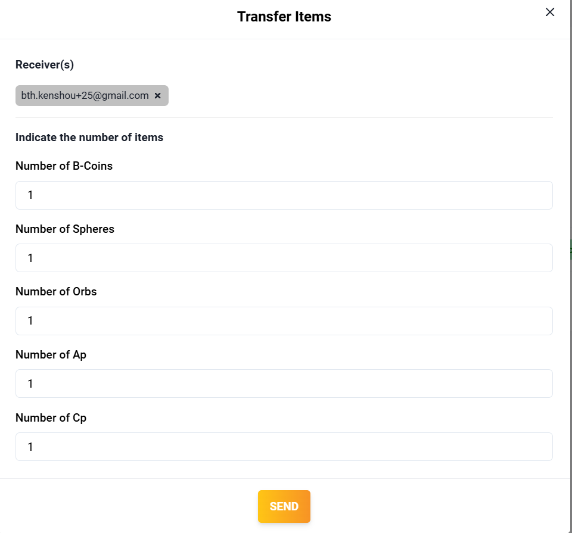
【画像3】アカウント（メールアドレス）を増やす
設定手順
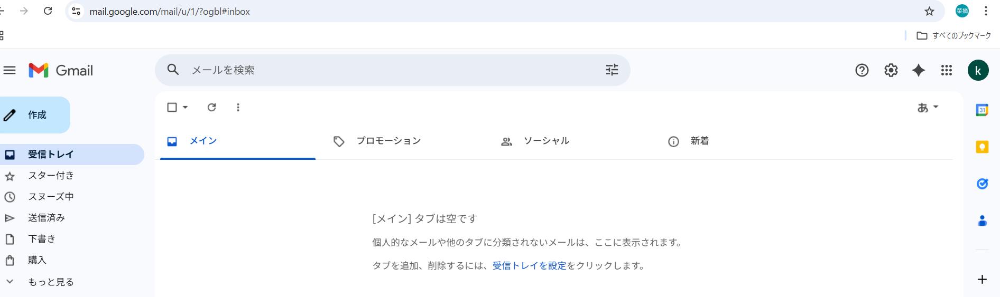
【画像A】bth.kenshou@gmail.comのGメールを開き、左端の欄から「もっと見る」をクリックして、画像Bの「ラベルの管理」をクリック。（画像A参照）- 画像Cの「アカウントとインポート」をクリックして、画像Dの「他のメールアドレスを追加」をクリック。
- 名前は「テスト」等テキトーに入れて、メールアドレスに増やしたいアドレス（例:
bth.kenshou+44@gmail.com等）を入力する。
「別の返信先アドレスを指定」を開いて、そこにbth.kenshou@gmail.comを入れておく。 - 最後に「次のステップ」をクリックするとメールアドレスが作成できる。
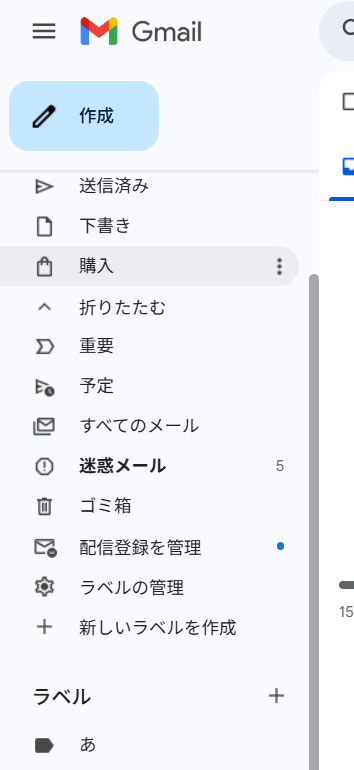
【画像B】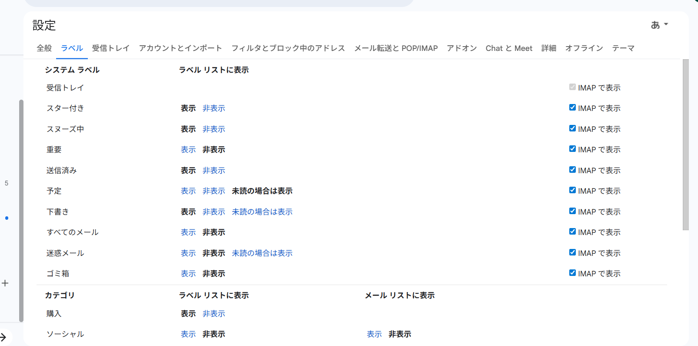
【画像C】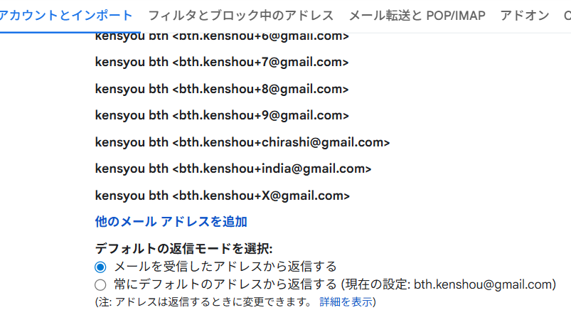
【画像D】古いアドレスは誰かが使っている可能性があるので消去しないこと。
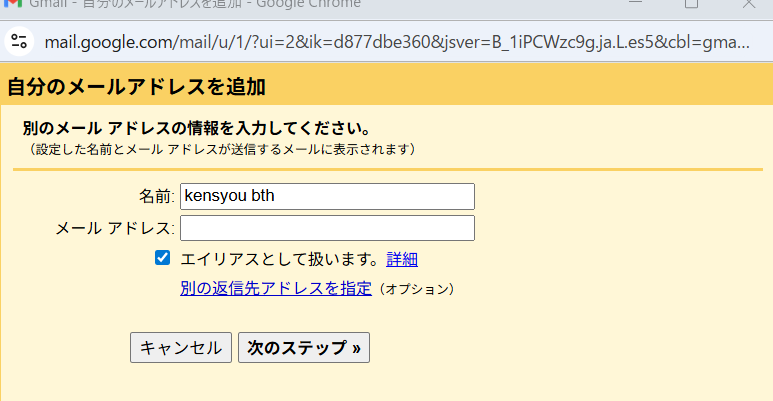
【画像E】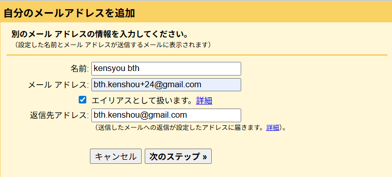
【画像F】ブースログ設定
BAPから「ブースログの確認がしたい」と連絡が来た際に行う手順です。
設定手順
- ブースにモニターとマウスを接続する。（モニターとマウスの端子は筐体に直接挿す）
- 設定 →「More Setting」を開く。
- 「debug」をクリックする。
- 「net adb」に ✅（チェック）を入れる。
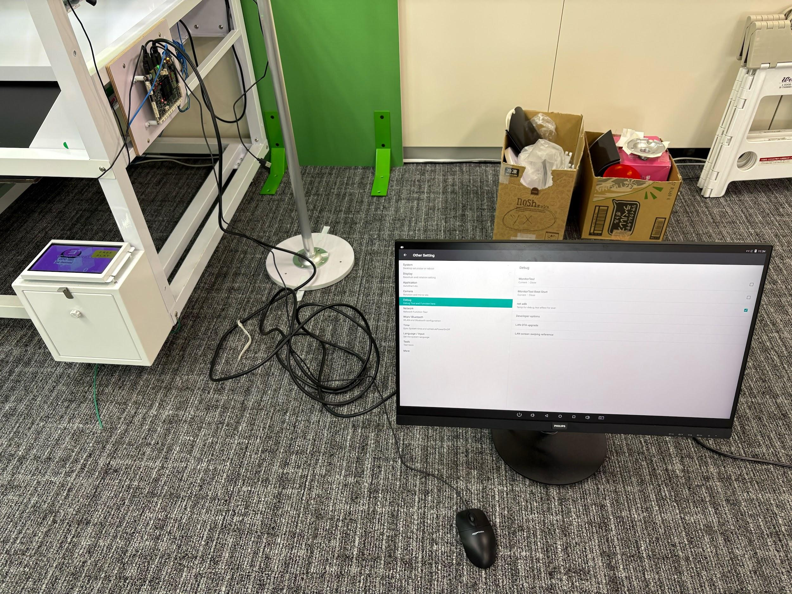
【画像1】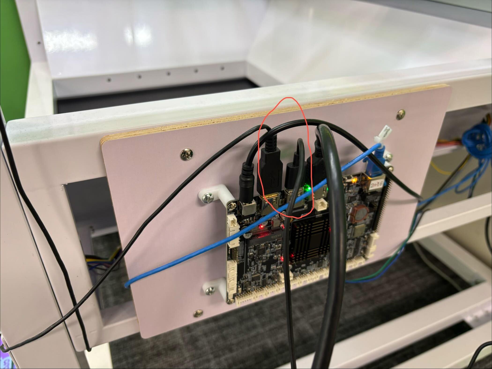
【画像2】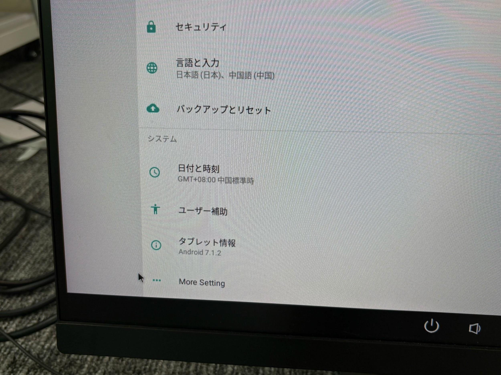
【画像3】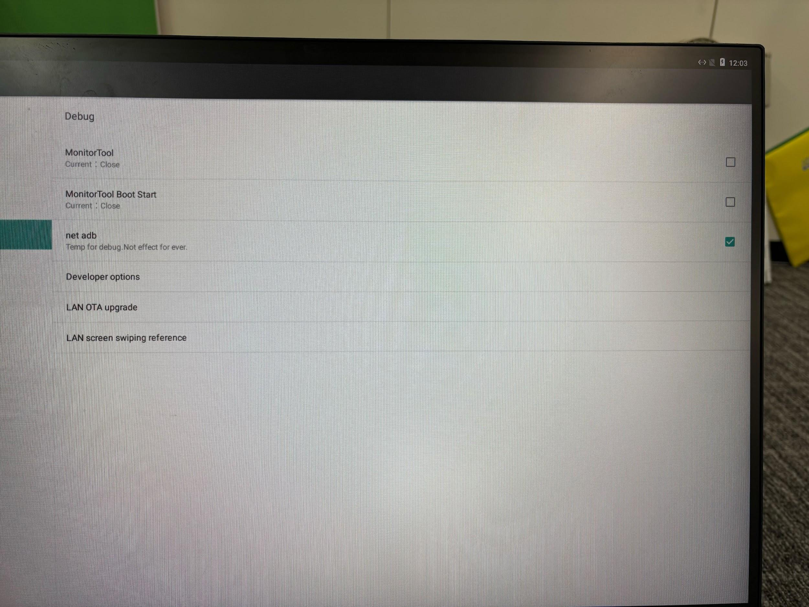
【画像4】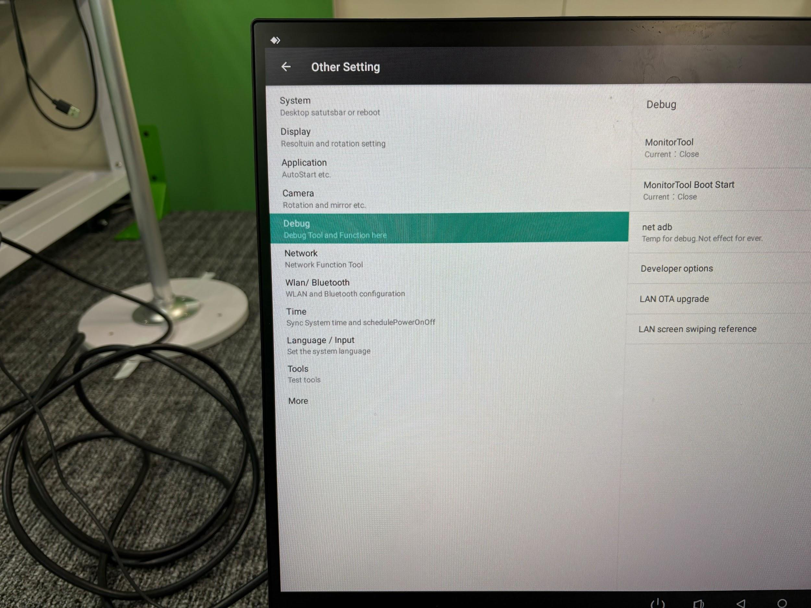
【画像5】📽️ 手順参考動画
📽️ 参考動画を確認するユーザー動向分析ツール
① 管理パネルからログデータをダウンロードする
User Management→User Managementを開き、【画像1】の赤丸をクリックします。
※クリックするとダウンロードが始まります。
 【画像1】
【画像1】
② 分析画面への反映
ダウンロードしたCSVファイルを【画像2】の赤丸「ファイルを選択」から読み込んでください。
 【画像2】
【画像2】
③ CSVファイル読み込み後の使い方について
読み込み後の使い方については、ツール付属のマニュアルにてご確認ください。
※【画像3】の赤丸をクリック。
 【画像3】
【画像3】
ブース稼働分析ツールの使い方
「Bounty Hunters 稼働分析ツール」は、ブースから出力されたログファイルを読み込み、獲得率やエラー率、アシスト発生状況などを統計的に可視化するツールです。
① 管理パネルからログデータをダウンロード
Machine Management→Machine Mapを開いてください。
【画像1】の赤丸をクリック後、【画像2】の赤丸をクリックしてCSVファイルをダウンロードします。
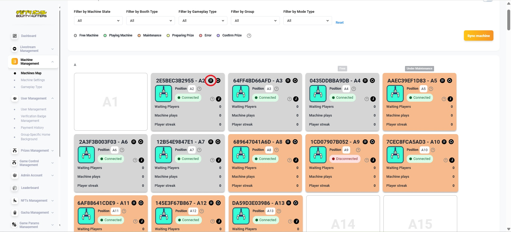
【画像1】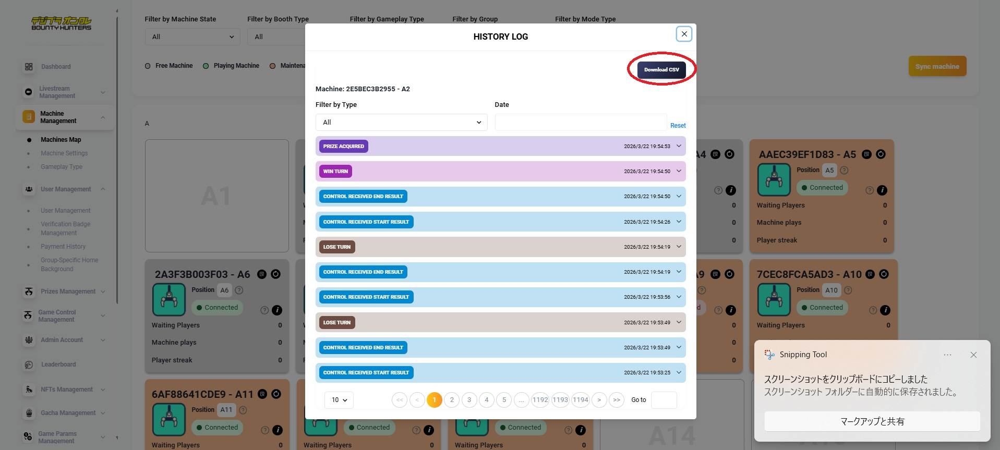
【画像2】① ログデータの読み込み
CSV一括インポート:
中央の点線枠「CSVファイルをドロップ」エリアに、対象のログファイルをドラッグ＆ドロップしてください。一度に最大150ファイル程度まで一括処理が可能です。
② 基本的な集計ロジック
ツールは読み込んだログから以下の項目を自動計算します。
- WIN / LOSE: プレイ結果の集計。
- アシスト (Assist): 獲得がないまま20連続プレイ（天井設定）を超えた場合に、自動的に「アシスト」としてカウントします。
- エラー (e1～e4): 各種エラーログの発生回数を分類して表示します。
- 平均獲得数 (Avg): 期間内の稼働効率を算出し、異常値がある場合は強調表示されます。
③ データの管理と同期
右上のボタンからGoogle Driveとの同期が可能です。別のPCで作業を継続する場合は、必ず「Driveへ同期」を行ってください。
④ 便利な機能
- タグ絞り込み: 「じかおき」「橋渡し」「フリー」などのタグを入力して保存すると、特定の種別だけを一覧表示できます。
- 期間指定: ヘッダーの日付選択から、特定のイベント期間や日別のデータに絞り込んで分析できます。
- 名前の変更: MACアドレス表示部分をクリックして、ブース名（例：A28）などにリネームして管理できます。